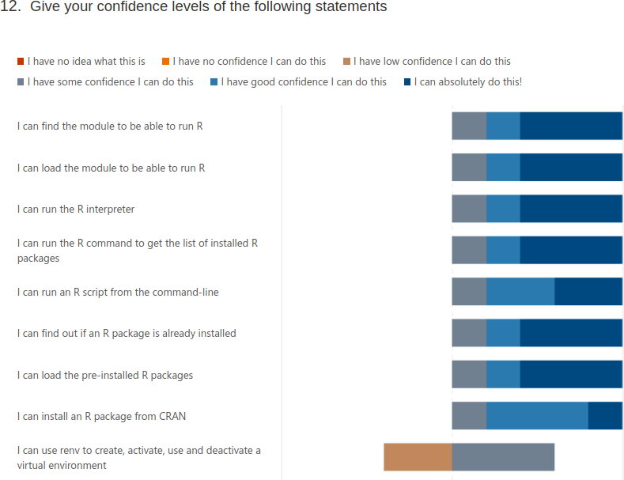

Evaluation 2024-10-24: R¶
- Reflections: Richel
5 responses
1. Overall, how would you rate today’s training event?¶
- 7.4. Average Number
2. Today’s content and feedback to the lecturers (e.g. materials, exercises, structure): – What did you like best?¶
- I liked being able to run through the examples myself.
- Pedro’s sessions
3. Today’s content and feedback to the lecturers (e.g. materials, exercises, structure): – Where should we improve?¶
- I think sometimes there could have been slightly less kinds of examples, and one main example per module with extra focus and more time to complete.
4. Training event organisation (e.g. announcement, registration, …): – What did you like best? – Where should we improve?¶
- I liked the general organization, felt like any questions one might have where answered in the introductory email.
5. Length of teaching today was¶
- Adequate 4
- Too short 0
- Too long 1
6. Depth of content was¶
- Adequate 4
- Too superficial 1
- Too profound 0
7. The pace of teaching was¶
- Adequate 3
- Too slow 0
- Too fast 2
8. Teaching aids used (e.g. slides) were well prepared¶
- Agree completely 2
- Agree 3
- No strong feelings 0
- Disagree 0
- Disagree completely 0
9. Hands-on exercises and demonstrations were¶
- Adequate 3
- Too few 2
- Too many 0
10. Hands-on exercises and demonstrations were well prepared¶
- Agree completely 2
- Agree 3
- No strong feelings 0
- Disagree 0
- Disagree completely 0
11. How would you rate the separate sessions?¶

12. Give your confidence levels of the following statements¶


13.Did today’s course meet your expectation?¶
- Yes 3
- No 0
- Not sure 2
14. Which future training topics would you like to be provided by the training host(s)?¶
- 2 responses
15. Do you have any additional comments?¶
- 1 response